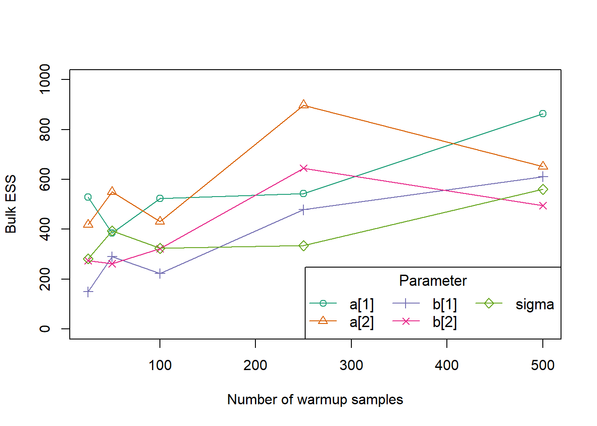
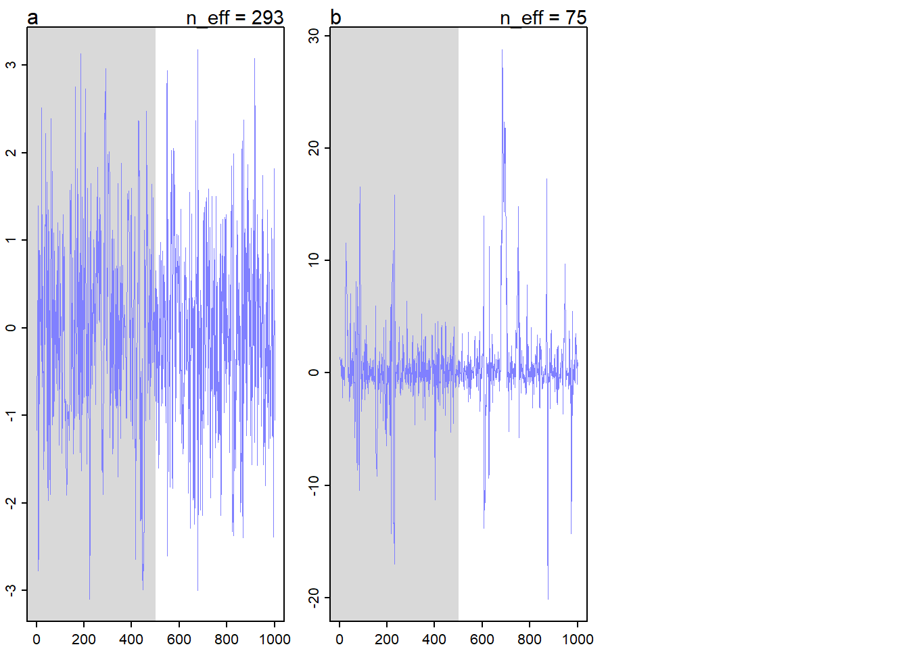

library(rethinking)
library(dagitty)
library(cmdstanr)This chapter covers Markov Chain Monte Carlo, Gibbs sampling, Hamiltonian Monte Carlo, and the HMC implementation in rethinking.
Exercises
9E1
The simple Metropolis algorithm requires that the proposal distribution must be symmetric.
9E2
Gibbs sampling achieves better efficiency than the simple Metropolis algorithm by using conjugate prior distributions to adapt the proposal distribution as the parameters change. This allows a Gibbs sampler to make intelligent jumps around the posterior distribution, rather than blindly guessing. However, Gibbs samplers require the use of these conjugate priors, and often fail to retain their efficiency for high-dimensional, multilevel parameter spaces.
9E3
Hamiltonian Monte Carlo cannot handle discrete parameters, because the gradient is not continuous and the physics simulation that generates proposals will not be able to move along a discrete parameter space.
9E4
The effective number of samples is the number of samples from the posterior adjusted for the autocorrelation between successive samples. Autocorrelated samples do not provide as much information as independent samples, and so multiple highly autocorrelated draws give us less information than the reported sample size would have if the draws were independent. Conversely, anticorrelated samples provide more information than the corresponding number of independent samples.
9E5
If the chains are mixing correctly, \(\hat{R}\) should approach 1.
9E6
A good trace plot should show constant movement of each chain in the model, and the chains should cross each other constantly. This indicates that all chains are exploring the posterior distribution without getting stuck, and they are mixing well. A bad trace plot would have chains which are separated from each other, indicating that they are all exploring different areas of the posterior distribution without mixing; or some chains could get stuck near particular parameter values, indicating that chain is failing to correctly explore.
9E7
A good trace rank plot will look similar to a good trace plot, but we will be able to see whether the chains are mixing more easily because each chain will be constantly change ranks at the next sampling iteration.
9M1
First we need to restimate the terrain ruggedness model using a uniform prior distribution for the sigma parameter.
data("rugged")
d <- rugged
d$log_gdp <- log(d$rgdppc_2000)
dd <- subset(
d,
subset = complete.cases(rgdppc_2000),
select = c(log_gdp, rugged, cont_africa)
)
dd$log_gdp_std <- dd$log_gdp / mean(dd$log_gdp)
dd$rugged_std <- dd$rugged / max(dd$rugged)
dd$cid <- ifelse(dd$cont_africa == 1, 1, 2)
m_9m1 <- rethinking::ulam(
flist = alist(
log_gdp_std ~ dnorm(mu, sigma),
mu <- a[cid] + b[cid] * (rugged_std - 0.215),
a[cid] ~ dnorm(1, 0.1),
b[cid] ~ dnorm(0, 0.3),
sigma ~ dunif(0, 1)
),
data = dd,
chains = 1
)Running MCMC with 1 chain, with 1 thread(s) per chain...
Chain 1 Iteration: 1 / 1000 [ 0%] (Warmup)
Chain 1 Iteration: 100 / 1000 [ 10%] (Warmup)
Chain 1 Iteration: 200 / 1000 [ 20%] (Warmup)
Chain 1 Iteration: 300 / 1000 [ 30%] (Warmup)
Chain 1 Iteration: 400 / 1000 [ 40%] (Warmup)
Chain 1 Iteration: 500 / 1000 [ 50%] (Warmup)
Chain 1 Iteration: 501 / 1000 [ 50%] (Sampling)
Chain 1 Iteration: 600 / 1000 [ 60%] (Sampling)
Chain 1 Iteration: 700 / 1000 [ 70%] (Sampling)
Chain 1 Iteration: 800 / 1000 [ 80%] (Sampling)
Chain 1 Iteration: 900 / 1000 [ 90%] (Sampling)
Chain 1 Iteration: 1000 / 1000 [100%] (Sampling)
Chain 1 finished in 0.1 seconds.rethinking::precis(m_9m1, depth = 2) mean sd 5.5% 94.5% rhat ess_bulk
a[1] 0.8861856 0.016727844 0.85879647 0.91299614 0.9990946 802.7109
a[2] 1.0511055 0.009713390 1.03589900 1.06660105 0.9989215 756.5013
b[1] 0.1346505 0.074410550 0.01759458 0.25547076 1.0059212 630.7254
b[2] -0.1399597 0.052200342 -0.22223359 -0.05203603 1.0024948 774.4205
sigma 0.1117896 0.006114547 0.10204019 0.12203856 0.9993043 665.5564The mean and credible intervals for all the parameters are very similar, although the ESS is lower, indicating that sampling was less efficient using a uniform prior. However, since we collected enough samples and we have enough data, the prior does not have a strong influence on estimating our parameters. Notably, the estimated value of sigma in the previous model was within the constraints of the new prior we used, so even though a uniform prior imposes constraints on the possible values of sigma, we didn’t actually run into those boundaries in practice. If our sigma value were larger than one, we would expect this new posterior to look different.
9M2
Now we’ll put the prior for sigma back to exponential but we’ll change the prior the slopes.
m_9m2 <- rethinking::ulam(
flist = alist(
log_gdp_std ~ dnorm(mu, sigma),
mu <- a[cid] + b[cid] * (rugged_std - 0.215),
a[cid] ~ dnorm(1, 0.1),
b[cid] ~ dexp(0.3),
sigma ~ dexp(1)
),
data = dd,
chains = 1
)Running MCMC with 1 chain, with 1 thread(s) per chain...
Chain 1 Iteration: 1 / 1000 [ 0%] (Warmup)
Chain 1 Iteration: 100 / 1000 [ 10%] (Warmup)
Chain 1 Iteration: 200 / 1000 [ 20%] (Warmup)
Chain 1 Iteration: 300 / 1000 [ 30%] (Warmup)
Chain 1 Iteration: 400 / 1000 [ 40%] (Warmup)
Chain 1 Iteration: 500 / 1000 [ 50%] (Warmup)
Chain 1 Iteration: 501 / 1000 [ 50%] (Sampling)
Chain 1 Iteration: 600 / 1000 [ 60%] (Sampling)
Chain 1 Iteration: 700 / 1000 [ 70%] (Sampling)
Chain 1 Iteration: 800 / 1000 [ 80%] (Sampling)
Chain 1 Iteration: 900 / 1000 [ 90%] (Sampling)
Chain 1 Iteration: 1000 / 1000 [100%] (Sampling)
Chain 1 finished in 0.1 seconds.rethinking::precis(m_9m2, depth = 2) mean sd 5.5% 94.5% rhat ess_bulk
a[1] 0.8867027 0.015986969 0.861782795 0.91321405 1.0010978 363.3919
a[2] 1.0487722 0.011052562 1.031575600 1.06717775 0.9999671 377.2237
b[1] 0.1448860 0.077278637 0.028537382 0.27700223 1.0087955 152.3391
b[2] 0.0192251 0.018689259 0.001219716 0.05650697 1.0195639 258.3286
sigma 0.1143160 0.006114566 0.105097940 0.12451617 0.9985825 500.9476Now, of course, the estimated slopes have changed a bit. Because of the exponential prior we specified, the slopes that we estimate MUST be positive. In the previous model, b[2] was negative and now it can’t be. Notably, our ESS has decreased further from the original model as well.
9M3
We’ll rerun the terrain ruggedness model with the original prior for multiple different numbers of warm-up samples. Although this will take a bit to run because of the compilation step, I’ll go do something else while it’s running so it’s not too annoying.
fit_9m3 <- function(warmup) {
model <- rethinking::ulam(
flist = alist(
log_gdp_std ~ dnorm(mu, sigma),
mu <- a[cid] + b[cid] * (rugged_std - 0.215),
a[cid] ~ dnorm(1, 0.1),
b[cid] ~ dnorm(0, 0.3),
sigma ~ dexp(1)
),
data = dd,
chains = 1,
warmup = warmup,
iter = 500 + warmup
)
return(model)
}
get_ess <- function(ulam_fit) {
prc <- rethinking::precis(ulam_fit, depth = Inf)
res <- prc$ess_bulk
names(res) <- rownames(prc)
return(res)
}
wu_iters <- c(25, 50, 100, 250, 500)
res <- purrr::map(
.x = wu_iters,
.f = \(w) w |>
fit_9m3() |>
get_ess()
)Running MCMC with 1 chain, with 1 thread(s) per chain...
Chain 1 WARNING: There aren't enough warmup iterations to fit the
Chain 1 three stages of adaptation as currently configured.
Chain 1 Reducing each adaptation stage to 15%/75%/10% of
Chain 1 the given number of warmup iterations:
Chain 1 init_buffer = 3
Chain 1 adapt_window = 20
Chain 1 term_buffer = 2
Chain 1 Iteration: 1 / 525 [ 0%] (Warmup)
Chain 1 Iteration: 26 / 525 [ 4%] (Sampling)
Chain 1 Iteration: 125 / 525 [ 23%] (Sampling)
Chain 1 Iteration: 225 / 525 [ 42%] (Sampling)
Chain 1 Iteration: 325 / 525 [ 61%] (Sampling)
Chain 1 Iteration: 425 / 525 [ 80%] (Sampling)
Chain 1 Iteration: 525 / 525 [100%] (Sampling)
Chain 1 finished in 0.1 seconds.
Running MCMC with 1 chain, with 1 thread(s) per chain...
Chain 1 WARNING: There aren't enough warmup iterations to fit the
Chain 1 three stages of adaptation as currently configured.
Chain 1 Reducing each adaptation stage to 15%/75%/10% of
Chain 1 the given number of warmup iterations:
Chain 1 init_buffer = 7
Chain 1 adapt_window = 38
Chain 1 term_buffer = 5
Chain 1 Iteration: 1 / 550 [ 0%] (Warmup)
Chain 1 Iteration: 51 / 550 [ 9%] (Sampling)
Chain 1 Iteration: 150 / 550 [ 27%] (Sampling)
Chain 1 Iteration: 250 / 550 [ 45%] (Sampling)
Chain 1 Iteration: 350 / 550 [ 63%] (Sampling)
Chain 1 Iteration: 450 / 550 [ 81%] (Sampling)
Chain 1 Iteration: 550 / 550 [100%] (Sampling) Chain 1 Informational Message: The current Metropolis proposal is about to be rejected because of the following issue:Chain 1 Exception: normal_lpdf: Scale parameter is 0, but must be positive! (in 'C:/Users/Zane/AppData/Local/Temp/RtmpGGxQHW/model-2c7c64036885.stan', line 22, column 4 to column 39)Chain 1 If this warning occurs sporadically, such as for highly constrained variable types like covariance matrices, then the sampler is fine,Chain 1 but if this warning occurs often then your model may be either severely ill-conditioned or misspecified.Chain 1 Chain 1 finished in 0.1 seconds.
Running MCMC with 1 chain, with 1 thread(s) per chain...
Chain 1 WARNING: There aren't enough warmup iterations to fit the
Chain 1 three stages of adaptation as currently configured.
Chain 1 Reducing each adaptation stage to 15%/75%/10% of
Chain 1 the given number of warmup iterations:
Chain 1 init_buffer = 15
Chain 1 adapt_window = 75
Chain 1 term_buffer = 10
Chain 1 Iteration: 1 / 600 [ 0%] (Warmup)
Chain 1 Iteration: 100 / 600 [ 16%] (Warmup)
Chain 1 Iteration: 101 / 600 [ 16%] (Sampling)
Chain 1 Iteration: 200 / 600 [ 33%] (Sampling)
Chain 1 Iteration: 300 / 600 [ 50%] (Sampling)
Chain 1 Iteration: 400 / 600 [ 66%] (Sampling)
Chain 1 Iteration: 500 / 600 [ 83%] (Sampling)
Chain 1 Iteration: 600 / 600 [100%] (Sampling) Chain 1 Informational Message: The current Metropolis proposal is about to be rejected because of the following issue:Chain 1 Exception: normal_lpdf: Scale parameter is 0, but must be positive! (in 'C:/Users/Zane/AppData/Local/Temp/RtmpGGxQHW/model-2c7c51fe7669.stan', line 22, column 4 to column 39)Chain 1 If this warning occurs sporadically, such as for highly constrained variable types like covariance matrices, then the sampler is fine,Chain 1 but if this warning occurs often then your model may be either severely ill-conditioned or misspecified.Chain 1 Chain 1 finished in 0.1 seconds.
Running MCMC with 1 chain, with 1 thread(s) per chain...
Chain 1 Iteration: 1 / 750 [ 0%] (Warmup)
Chain 1 Iteration: 100 / 750 [ 13%] (Warmup)
Chain 1 Iteration: 200 / 750 [ 26%] (Warmup)
Chain 1 Iteration: 251 / 750 [ 33%] (Sampling)
Chain 1 Iteration: 350 / 750 [ 46%] (Sampling)
Chain 1 Iteration: 450 / 750 [ 60%] (Sampling)
Chain 1 Iteration: 550 / 750 [ 73%] (Sampling)
Chain 1 Iteration: 650 / 750 [ 86%] (Sampling)
Chain 1 Iteration: 750 / 750 [100%] (Sampling) Chain 1 Informational Message: The current Metropolis proposal is about to be rejected because of the following issue:Chain 1 Exception: normal_lpdf: Scale parameter is 0, but must be positive! (in 'C:/Users/Zane/AppData/Local/Temp/RtmpGGxQHW/model-2c7c64382f89.stan', line 22, column 4 to column 39)Chain 1 If this warning occurs sporadically, such as for highly constrained variable types like covariance matrices, then the sampler is fine,Chain 1 but if this warning occurs often then your model may be either severely ill-conditioned or misspecified.Chain 1 Chain 1 finished in 0.0 seconds.
Running MCMC with 1 chain, with 1 thread(s) per chain...
Chain 1 Iteration: 1 / 1000 [ 0%] (Warmup)
Chain 1 Iteration: 100 / 1000 [ 10%] (Warmup)
Chain 1 Iteration: 200 / 1000 [ 20%] (Warmup)
Chain 1 Iteration: 300 / 1000 [ 30%] (Warmup)
Chain 1 Iteration: 400 / 1000 [ 40%] (Warmup)
Chain 1 Iteration: 500 / 1000 [ 50%] (Warmup)
Chain 1 Iteration: 501 / 1000 [ 50%] (Sampling)
Chain 1 Iteration: 600 / 1000 [ 60%] (Sampling)
Chain 1 Iteration: 700 / 1000 [ 70%] (Sampling)
Chain 1 Iteration: 800 / 1000 [ 80%] (Sampling)
Chain 1 Iteration: 900 / 1000 [ 90%] (Sampling)
Chain 1 Iteration: 1000 / 1000 [100%] (Sampling) Chain 1 Informational Message: The current Metropolis proposal is about to be rejected because of the following issue:Chain 1 Exception: normal_lpdf: Scale parameter is 0, but must be positive! (in 'C:/Users/Zane/AppData/Local/Temp/RtmpGGxQHW/model-2c7c14c44423.stan', line 22, column 4 to column 39)Chain 1 If this warning occurs sporadically, such as for highly constrained variable types like covariance matrices, then the sampler is fine,Chain 1 but if this warning occurs often then your model may be either severely ill-conditioned or misspecified.Chain 1 Chain 1 finished in 0.1 seconds.res_df <- do.call(rbind, res)
plot_colors <- RColorBrewer::brewer.pal(5, "Dark2")
plot(
NULL, NULL,
xlim = c(25, 500),
ylim = c(0, 1000),
xlab = "Number of warmup samples",
ylab = "Bulk ESS"
)
for (i in 1:nrow(res_df)) {
lines(
wu_iters,
res_df[, i],
col = plot_colors[[i]],
lwd = 1.25
)
points(
wu_iters,
res_df[, i],
col = plot_colors[[i]],
pch = i,
cex = 1.1
)
}
legend(
x = "bottomright",
legend = colnames(res_df),
col = plot_colors,
pch = 1:5,
cex = 1.05,
lwd = 1.25,
ncol = 3,
title = "Parameter"
)
Based on this quick experiment, it appears that around 250 warmup samples is enough to get consistent ESS for all parameters in the model. However, for a more complicated model we would likely need more warmup iterations.
9H1
First we’ll run the model specified by the book.
mp <- rethinking::ulam(
alist(
a ~ dnorm(0, 1),
b ~ dcauchy(0, 1)
),
data = list(y = 1),
chains = 1
)Running MCMC with 1 chain, with 1 thread(s) per chain...
Chain 1 Iteration: 1 / 1000 [ 0%] (Warmup)
Chain 1 Iteration: 100 / 1000 [ 10%] (Warmup)
Chain 1 Iteration: 200 / 1000 [ 20%] (Warmup)
Chain 1 Iteration: 300 / 1000 [ 30%] (Warmup)
Chain 1 Iteration: 400 / 1000 [ 40%] (Warmup)
Chain 1 Iteration: 500 / 1000 [ 50%] (Warmup)
Chain 1 Iteration: 501 / 1000 [ 50%] (Sampling)
Chain 1 Iteration: 600 / 1000 [ 60%] (Sampling)
Chain 1 Iteration: 700 / 1000 [ 70%] (Sampling)
Chain 1 Iteration: 800 / 1000 [ 80%] (Sampling)
Chain 1 Iteration: 900 / 1000 [ 90%] (Sampling)
Chain 1 Iteration: 1000 / 1000 [100%] (Sampling)
Chain 1 finished in 0.0 seconds.Now we’ll look at the precis.
rethinking::precis(mp) mean sd 5.5% 94.5% rhat ess_bulk
a -0.0659244 1.058825 -1.822732 1.578376 0.9997755 293.37368
b 1.0691995 5.054071 -3.111886 11.028069 1.0096110 74.90538And the trace plots.
rethinking::traceplot(mp)
We can see that the traceplot and summary for the parameter a are normal, but the parameter b has an inflated variance, lower ESS, and kind of crazy looking traceplot. This is because the normal distribution is typically very well-behaved, but the Cauchy distribution is often problematic. The Cauchy distribution has no expected value and very thick tails, so we can see that when the HMC sampler is exploring the density of parameter b, it sometimes goes into regions of the distribution which are quite far from zero, because they are, in general, much likelier than the corresponding regions for the parameter a. That means that we would need more samples and more data to accurately sample a Cauchy parameter than a Normal parameter.
These properties of the Cauchy distribution are partially why Stan developer Michael Betancourt recommends not using Cauchy priors at all, despite their popularity for a period of time.
9H2
For this problem, we’ll refit models m5.1, m5.2, and m5.3 from the chapter 5 divorce rate example. First we need to set up the data. Note that we can’t use McElreath’s code exactly anymore because Stan now complains about dots in the variable names of d if we include all the variables from WaffleDivorce in the ulam() data list.
data("WaffleDivorce")
d <- list()
d$D <- rethinking::standardize(WaffleDivorce$Divorce)
d$M <- rethinking::standardize(WaffleDivorce$Marriage)
d$A <- rethinking::standardize(WaffleDivorce$MedianAgeMarriage)Now we’ll refit the three models using ulam().
m5.1 <- rethinking::ulam(
alist(
D ~ dnorm(mu, sigma),
mu <- a + bA * A,
a ~ dnorm(0, 0.2),
bA ~ dnorm(0, 0.5),
sigma ~ dexp(1)
),
data = d,
log_lik = TRUE
)Running MCMC with 1 chain, with 1 thread(s) per chain...
Chain 1 Iteration: 1 / 1000 [ 0%] (Warmup)
Chain 1 Iteration: 100 / 1000 [ 10%] (Warmup)
Chain 1 Iteration: 200 / 1000 [ 20%] (Warmup)
Chain 1 Iteration: 300 / 1000 [ 30%] (Warmup)
Chain 1 Iteration: 400 / 1000 [ 40%] (Warmup)
Chain 1 Iteration: 500 / 1000 [ 50%] (Warmup)
Chain 1 Iteration: 501 / 1000 [ 50%] (Sampling)
Chain 1 Iteration: 600 / 1000 [ 60%] (Sampling)
Chain 1 Iteration: 700 / 1000 [ 70%] (Sampling)
Chain 1 Iteration: 800 / 1000 [ 80%] (Sampling) Chain 1 Informational Message: The current Metropolis proposal is about to be rejected because of the following issue:Chain 1 Exception: normal_lpdf: Scale parameter is 0, but must be positive! (in 'C:/Users/Zane/AppData/Local/Temp/RtmpGGxQHW/model-2c7c2dd25a5e.stan', line 19, column 4 to column 29)Chain 1 If this warning occurs sporadically, such as for highly constrained variable types like covariance matrices, then the sampler is fine,Chain 1 but if this warning occurs often then your model may be either severely ill-conditioned or misspecified.Chain 1 Chain 1 Iteration: 900 / 1000 [ 90%] (Sampling)
Chain 1 Iteration: 1000 / 1000 [100%] (Sampling)
Chain 1 finished in 0.1 seconds.m5.2 <- rethinking::ulam(
alist(
D ~ dnorm(mu, sigma),
mu <- a + bM * M,
a ~ dnorm(0, 0.2),
bM ~ dnorm(0, 0.5),
sigma ~ dexp(1)
),
data = d,
log_lik = TRUE
)Running MCMC with 1 chain, with 1 thread(s) per chain...
Chain 1 Iteration: 1 / 1000 [ 0%] (Warmup)
Chain 1 Iteration: 100 / 1000 [ 10%] (Warmup)
Chain 1 Iteration: 200 / 1000 [ 20%] (Warmup)
Chain 1 Iteration: 300 / 1000 [ 30%] (Warmup)
Chain 1 Iteration: 400 / 1000 [ 40%] (Warmup)
Chain 1 Iteration: 500 / 1000 [ 50%] (Warmup)
Chain 1 Iteration: 501 / 1000 [ 50%] (Sampling)
Chain 1 Iteration: 600 / 1000 [ 60%] (Sampling)
Chain 1 Iteration: 700 / 1000 [ 70%] (Sampling)
Chain 1 Iteration: 800 / 1000 [ 80%] (Sampling)
Chain 1 Iteration: 900 / 1000 [ 90%] (Sampling) Chain 1 Informational Message: The current Metropolis proposal is about to be rejected because of the following issue:Chain 1 Exception: normal_lpdf: Scale parameter is 0, but must be positive! (in 'C:/Users/Zane/AppData/Local/Temp/RtmpGGxQHW/model-2c7c6cf35893.stan', line 19, column 4 to column 29)Chain 1 If this warning occurs sporadically, such as for highly constrained variable types like covariance matrices, then the sampler is fine,Chain 1 but if this warning occurs often then your model may be either severely ill-conditioned or misspecified.Chain 1 Chain 1 Iteration: 1000 / 1000 [100%] (Sampling)
Chain 1 finished in 0.1 seconds.m5.3 <- rethinking::ulam(
alist(
D ~ dnorm(mu, sigma),
mu <- a + bM * M + bA * A,
a ~ dnorm(0, 0.2),
bM ~ dnorm(0, 0.5),
bA ~ dnorm(0, 0.5),
sigma ~ dexp(1)
),
data = d,
log_lik = TRUE
)Running MCMC with 1 chain, with 1 thread(s) per chain...
Chain 1 Iteration: 1 / 1000 [ 0%] (Warmup)
Chain 1 Iteration: 100 / 1000 [ 10%] (Warmup)
Chain 1 Iteration: 200 / 1000 [ 20%] (Warmup)
Chain 1 Iteration: 300 / 1000 [ 30%] (Warmup)
Chain 1 Iteration: 400 / 1000 [ 40%] (Warmup)
Chain 1 Iteration: 500 / 1000 [ 50%] (Warmup)
Chain 1 Iteration: 501 / 1000 [ 50%] (Sampling)
Chain 1 Iteration: 600 / 1000 [ 60%] (Sampling)
Chain 1 Iteration: 700 / 1000 [ 70%] (Sampling)
Chain 1 Iteration: 800 / 1000 [ 80%] (Sampling)
Chain 1 Iteration: 900 / 1000 [ 90%] (Sampling)
Chain 1 Iteration: 1000 / 1000 [100%] (Sampling)
Chain 1 finished in 0.1 seconds.Now we’ll compare the models using PSIS.
rethinking::compare(
m5.1, m5.2, m5.3,
sort = "PSIS",
func = PSIS
)Some Pareto k values are high (>0.5). Set pointwise=TRUE to inspect individual points.
Some Pareto k values are high (>0.5). Set pointwise=TRUE to inspect individual points. PSIS SE dPSIS dSE pPSIS weight
m5.1 125.7304 12.609766 0.0000000 NA 3.606487 0.6119015443
m5.3 126.6442 12.436596 0.9137428 0.960136 4.225346 0.3874938625
m5.2 139.5700 9.778422 13.8395419 9.071047 3.056550 0.0006045931Notably, McElreath’s PSIS output is formatted so that lower PSIS is better, which is the opposite of the ELPD metric used by the posterior and loo developers. Keeping this in mind, we see that the two models containing age at marriage both beat the model with only the marriage rate. These two models perform similarly, with a low standard error for the difference in their PSIS criterion. Notably, the difference between the best model and the worst model also has a very low ratio of the difference to the standard error, so even these two models are not very different.
9H3
First, we need to use the code from Chapter 6 to simulate some leg length data.
N_leg <- 100L
set.seed(909)
d_leg <- tibble::tibble(
height = rnorm(N_leg, 10, 2),
leg_prop = runif(N_leg, 0.4, 0.5),
leg_left = leg_prop * height + rnorm(N_leg, 0, 0.02),
leg_right = leg_prop * height + rnorm(N_leg, 0, 0.02)
)
head(d_leg)# A tibble: 6 × 4
height leg_prop leg_left leg_right
<dbl> <dbl> <dbl> <dbl>
1 5.93 0.454 2.68 2.71
2 6.51 0.412 2.68 2.68
3 9.35 0.422 3.93 3.98
4 9.23 0.431 3.96 3.99
5 10.4 0.429 4.43 4.42
6 10.1 0.494 4.96 4.97Now we’ll refit the first model and fit the new model with the constrained prior, this time using ulam() for both fits.
m5.8s <- rethinking::ulam(
alist(
height ~ dnorm(mu, sigma),
mu <- a + bl * leg_left + br * leg_right,
a ~ dnorm(10, 100),
bl ~ dnorm(2, 10),
br ~ dnorm(2, 10),
sigma ~ dexp(1)
),
data = d_leg,
chains = 4L,
cores = 4L,
start = list(a = 10, bl = 0, br = 0.1, sigma = 1),
log_lik = TRUE
)Running MCMC with 4 parallel chains, with 1 thread(s) per chain...
Chain 1 Iteration: 1 / 1000 [ 0%] (Warmup)
Chain 2 Iteration: 1 / 1000 [ 0%] (Warmup)
Chain 3 Iteration: 1 / 1000 [ 0%] (Warmup)
Chain 4 Iteration: 1 / 1000 [ 0%] (Warmup)
Chain 1 Iteration: 100 / 1000 [ 10%] (Warmup)
Chain 2 Iteration: 100 / 1000 [ 10%] (Warmup)
Chain 3 Iteration: 100 / 1000 [ 10%] (Warmup)
Chain 4 Iteration: 100 / 1000 [ 10%] (Warmup)
Chain 2 Iteration: 200 / 1000 [ 20%] (Warmup)
Chain 1 Iteration: 200 / 1000 [ 20%] (Warmup)
Chain 3 Iteration: 200 / 1000 [ 20%] (Warmup)
Chain 4 Iteration: 200 / 1000 [ 20%] (Warmup)
Chain 2 Iteration: 300 / 1000 [ 30%] (Warmup)
Chain 1 Iteration: 300 / 1000 [ 30%] (Warmup)
Chain 3 Iteration: 300 / 1000 [ 30%] (Warmup)
Chain 4 Iteration: 300 / 1000 [ 30%] (Warmup)
Chain 2 Iteration: 400 / 1000 [ 40%] (Warmup)
Chain 1 Iteration: 400 / 1000 [ 40%] (Warmup)
Chain 3 Iteration: 400 / 1000 [ 40%] (Warmup)
Chain 4 Iteration: 400 / 1000 [ 40%] (Warmup)
Chain 2 Iteration: 500 / 1000 [ 50%] (Warmup)
Chain 1 Iteration: 500 / 1000 [ 50%] (Warmup)
Chain 2 Iteration: 501 / 1000 [ 50%] (Sampling)
Chain 3 Iteration: 500 / 1000 [ 50%] (Warmup)
Chain 1 Iteration: 501 / 1000 [ 50%] (Sampling)
Chain 3 Iteration: 501 / 1000 [ 50%] (Sampling)
Chain 4 Iteration: 500 / 1000 [ 50%] (Warmup)
Chain 4 Iteration: 501 / 1000 [ 50%] (Sampling)
Chain 2 Iteration: 600 / 1000 [ 60%] (Sampling)
Chain 1 Iteration: 600 / 1000 [ 60%] (Sampling)
Chain 3 Iteration: 600 / 1000 [ 60%] (Sampling)
Chain 4 Iteration: 600 / 1000 [ 60%] (Sampling)
Chain 2 Iteration: 700 / 1000 [ 70%] (Sampling)
Chain 3 Iteration: 700 / 1000 [ 70%] (Sampling)
Chain 1 Iteration: 700 / 1000 [ 70%] (Sampling)
Chain 4 Iteration: 700 / 1000 [ 70%] (Sampling)
Chain 1 Iteration: 800 / 1000 [ 80%] (Sampling)
Chain 2 Iteration: 800 / 1000 [ 80%] (Sampling)
Chain 3 Iteration: 800 / 1000 [ 80%] (Sampling)
Chain 4 Iteration: 800 / 1000 [ 80%] (Sampling)
Chain 1 Iteration: 900 / 1000 [ 90%] (Sampling)
Chain 2 Iteration: 900 / 1000 [ 90%] (Sampling)
Chain 3 Iteration: 900 / 1000 [ 90%] (Sampling)
Chain 4 Iteration: 900 / 1000 [ 90%] (Sampling)
Chain 1 Iteration: 1000 / 1000 [100%] (Sampling)
Chain 1 finished in 4.6 seconds.
Chain 2 Iteration: 1000 / 1000 [100%] (Sampling)
Chain 2 finished in 0.0 seconds.
Chain 3 Iteration: 1000 / 1000 [100%] (Sampling)
Chain 4 Iteration: 1000 / 1000 [100%] (Sampling)
Chain 2 finished in 4.6 seconds.
Chain 3 finished in 4.7 seconds.
Chain 4 finished in 4.6 seconds.
All 4 chains finished successfully.
Mean chain execution time: 4.6 seconds.
Total execution time: 4.8 seconds.Warning: 1156 of 2000 (58.0%) transitions hit the maximum treedepth limit of 10.
See https://mc-stan.org/misc/warnings for details.m5.8s2 <- rethinking::ulam(
alist(
height ~ dnorm(mu, sigma),
mu <- a + bl * leg_left + br * leg_right,
a ~ dnorm(10, 100),
bl ~ dnorm(2, 10),
br ~ dnorm(2, 10),
sigma ~ dexp(1)
),
data = d_leg,
chains = 4L,
cores = 4L,
constraints = list(br = "lower=0"),
start = list(a = 10, bl = 0, br = 0.1, sigma = 1),
log_lik = TRUE
)Running MCMC with 4 parallel chains, with 1 thread(s) per chain...
Chain 1 Iteration: 1 / 1000 [ 0%] (Warmup)
Chain 1 Iteration: 100 / 1000 [ 10%] (Warmup)
Chain 2 Iteration: 1 / 1000 [ 0%] (Warmup)
Chain 3 Iteration: 1 / 1000 [ 0%] (Warmup)
Chain 4 Iteration: 1 / 1000 [ 0%] (Warmup)
Chain 2 Iteration: 100 / 1000 [ 10%] (Warmup)
Chain 3 Iteration: 100 / 1000 [ 10%] (Warmup)
Chain 4 Iteration: 100 / 1000 [ 10%] (Warmup)
Chain 1 Iteration: 200 / 1000 [ 20%] (Warmup)
Chain 3 Iteration: 200 / 1000 [ 20%] (Warmup)
Chain 2 Iteration: 200 / 1000 [ 20%] (Warmup)
Chain 4 Iteration: 200 / 1000 [ 20%] (Warmup)
Chain 1 Iteration: 300 / 1000 [ 30%] (Warmup)
Chain 3 Iteration: 300 / 1000 [ 30%] (Warmup)
Chain 2 Iteration: 300 / 1000 [ 30%] (Warmup)
Chain 4 Iteration: 300 / 1000 [ 30%] (Warmup)
Chain 1 Iteration: 400 / 1000 [ 40%] (Warmup)
Chain 3 Iteration: 400 / 1000 [ 40%] (Warmup)
Chain 4 Iteration: 400 / 1000 [ 40%] (Warmup)
Chain 2 Iteration: 400 / 1000 [ 40%] (Warmup)
Chain 1 Iteration: 500 / 1000 [ 50%] (Warmup)
Chain 3 Iteration: 500 / 1000 [ 50%] (Warmup)
Chain 1 Iteration: 501 / 1000 [ 50%] (Sampling)
Chain 3 Iteration: 501 / 1000 [ 50%] (Sampling)
Chain 4 Iteration: 500 / 1000 [ 50%] (Warmup)
Chain 2 Iteration: 500 / 1000 [ 50%] (Warmup)
Chain 4 Iteration: 501 / 1000 [ 50%] (Sampling)
Chain 2 Iteration: 501 / 1000 [ 50%] (Sampling)
Chain 1 Iteration: 600 / 1000 [ 60%] (Sampling)
Chain 3 Iteration: 600 / 1000 [ 60%] (Sampling)
Chain 2 Iteration: 600 / 1000 [ 60%] (Sampling)
Chain 4 Iteration: 600 / 1000 [ 60%] (Sampling)
Chain 1 Iteration: 700 / 1000 [ 70%] (Sampling)
Chain 3 Iteration: 700 / 1000 [ 70%] (Sampling)
Chain 2 Iteration: 700 / 1000 [ 70%] (Sampling)
Chain 4 Iteration: 700 / 1000 [ 70%] (Sampling)
Chain 1 Iteration: 800 / 1000 [ 80%] (Sampling)
Chain 3 Iteration: 800 / 1000 [ 80%] (Sampling)
Chain 2 Iteration: 800 / 1000 [ 80%] (Sampling)
Chain 1 Iteration: 900 / 1000 [ 90%] (Sampling)
Chain 4 Iteration: 800 / 1000 [ 80%] (Sampling)
Chain 3 Iteration: 900 / 1000 [ 90%] (Sampling)
Chain 2 Iteration: 900 / 1000 [ 90%] (Sampling)
Chain 1 Iteration: 1000 / 1000 [100%] (Sampling)
Chain 4 Iteration: 900 / 1000 [ 90%] (Sampling)
Chain 1 finished in 4.3 seconds.
Chain 3 Iteration: 1000 / 1000 [100%] (Sampling)
Chain 3 finished in 4.4 seconds.
Chain 2 Iteration: 1000 / 1000 [100%] (Sampling)
Chain 2 finished in 4.6 seconds.
Chain 4 Iteration: 1000 / 1000 [100%] (Sampling)
Chain 4 finished in 4.7 seconds.
All 4 chains finished successfully.
Mean chain execution time: 4.5 seconds.
Total execution time: 4.8 seconds.Warning: 8 of 2000 (0.0%) transitions ended with a divergence.
See https://mc-stan.org/misc/warnings for details.Warning: 1055 of 2000 (53.0%) transitions hit the maximum treedepth limit of 10.
See https://mc-stan.org/misc/warnings for details.OK, we get some diagnostic warnings from Stan about both of these models, but for now we’ll ignore those since the book doesn’t mention anything about it. (It makes sense because these models are kind of poorly parametrized anyway, which is the point of these models.) But now we need to compare the posterior distributions for the parameters in both models, so we’ll just plot both.
plot(rethinking::coeftab(m5.8s, m5.8s2))
The models are not all that different, the br parameter was already positive so adding the lower bound did not completely flip the sign of this parameter. However, since we assumed a higher prior likelihood of a positive coefficient, the br value was higher for the second model. Since the br and bl parameters are so strongly correlated, this forces the bl parameter to be smaller than it was before, to basically make up for the difference. The two parameters are nearly perfectly correlated so if we force one to shift upwards, the other has to shift downwards.
9H4
Now we need to compare the two models with PSIS.
rethinking::compare(
m5.8s, m5.8s2,
sort = "PSIS", func = PSIS
) PSIS SE dPSIS dSE pPSIS weight
m5.8s2 194.2770 11.20858 0.000000 NA 2.750542 0.6238919
m5.8s 195.2892 11.28823 1.012201 0.5685162 3.267715 0.3761081The original model has more effective parameters, slightly. But the difference is not really notable. However, the model that we imposed a constrained prior on has a lower effective parameter size, because we’ve excluded an entire region from being traversed by the sampler for a specific parameter, so we are more confident in that parameter.
9H5
For this problem, we’ll modify the Metropolis algorithm code from the chapter to handle the case that the island populations have a different distribution than the island numbers.
# First generate the 10 island populations
set.seed(375)
populations <- floor(runif(10, 1, 100))
# Now set up the num_weeks, positions and current variables, nothing
# changes in this part
num_weeks <- 1e5
positions <- rep(0, num_weeks)
current <- 10
# Most of the loop stays the same, we generate the proposal the same way
for (i in 1:num_weeks) {
## Record current position
positions[i] <- current
## Generate proposal
proposal <- current + sample(c(-1, 1), size = 1)
## Make sure he loops around the archipelago
if (proposal < 1) proposal <- 10
if (proposal > 10) proposal <- 1
## Next calculate the probability of moving based on the relative
## populations, which are not equal to the positions
prob_move <- populations[proposal] / populations[current]
current <- ifelse(runif(1) < prob_move, proposal, current)
}We only had to make a small adjustment to the code. Let’s check to make sure we’re spending time proportional to the island populations.
layout(matrix(c(1, 2), nrow = 1))
k <- 1000
plot(
1:k, positions[1:k], type = "l",
xlab = "Week",
ylab = "Island"
)
plot(
prop.table(table(positions)),
xlab = "Island",
ylab = "Relative frequency of time on island"
)
points(
x = 1:10,
y = populations / sum(populations),
col = "red",
pch = "-",
cex = 3
)
legend(
"topright",
col = "red", pch = "-",
legend = "Island population / total population"
)
layout(1)The left plot shows that we’re bouncing randomly between the islands, sometimes going back and forth between the same two, occasionally moving many times in a row, and occasionally staying on the same island. The right plot shows that we’re getting the right approximation – the amount of time we spend on each island is roughly the same as that island’s proportion of the total population. For reference I’ll print all of the island populations below.
populations [1] 96 69 73 92 16 96 53 9 29 39H6
For this exercise we’ll modify the Metropolis algorithm code from the chapter to write our own MCMC example for the globe tossing data and model. Following McElreath’s sketch from the beginning of section 9.2, we have that
- The “islands” are the possible values of the parameter \(p\), the proportion of the globe that is water;
- The “population sizes” are the probabilities of each value of \(p\) after we observed the globe tossing values; and
- The “weeks” are not interpretable as time values but are the samples we take from the posterior distribution of \(p\).
From chapter 2, we have 6 water samples and 3 land samples. We’ll set our initial value therefore as the MLE for the proportion of water, \(6 / 9 \approx 0.67\).
# Initialization
set.seed(376)
num_samples <- 1e5
p_samples <- rep(0, num_weeks)
current <- 0.67
# Most of the loop stays the same, we generate the proposal the same way
for (i in 1:num_samples) {
## Record current position
p_samples[i] <- current
## Generate proposal -- there are multiple ways to do this, but we'll
## just generate a new value that's within a certain distance of p. Then
## if p is outside the bounds [0, 1], we'll set it to the boundary.
proposal <- current + runif(1, -0.25, 0.25)
if (proposal < 0) proposal <- 0
if (proposal > 1) proposal <- 1
## Next calculate the likelihood of the current and proposed values
proposal_p <- dbinom(6, 9, proposal)
current_p <- dbinom(6, 9, current)
## Move?
prob_move <- proposal_p / current_p
current <- ifelse(runif(1) < prob_move, proposal, current)
}Now we can look at the estimated density of the posterior distribution of \(p\) that we’ve sampled from.
p_dens <- density(p_samples)
p_mode <- p_dens$x[which.max(p_dens$y)]
plot(
p_dens, main = "",
lwd = 2
)
abline(v = p_mode, lty = 2, col = "red", lwd = 1.5)
text(paste0("MAP = ", round(p_mode, 3)), x = p_mode - 0.05, y = 1.0)
The maximum a posteriori estimate from our sampled values is 0.69, which is quite close to the true estimated value somewhere near \(0.73\). Having more data samples would improve this a lot; adding more MCMC samples probably wouldn’t. But let’s look at the trace plot just to make sure.
k <- num_samples / 10
plot(x = 1:k, y = p_samples[1:k], type = "l", xlab = "draw", ylab = "p")
We can see that the chain moves up and down randomly (for these draws, which are the first 10^{4}). So it seems that our estimator didn’t get stuck anywhere and we can probably trust it.
9H7
Now we want to write our own HMC algorithm for the globe tossing data. We need to write functions for the likelihood and gradient. We know that the likelihood is
\[L(W \mid p, n) = \left({n}\atop{W}\right) p^W (1-p)^{n-W},\] and thus the log likelihood is \[\ell(W \mid p, n) = \log\left({n}\atop{W}\right) + W\log p + (n-w)\log(1-p).\]
Now we need to get the derivative of the log-likelihood, which is \[ \frac{d\ell}{dp} = \frac{w-np}{p(1-p)}. \]
Let’s implement both of these in R, ignoring the fact that the log-likelihood can already be obtained as dbinom(..., log = TRUE).
U <- function(p, W = 6, n = 9) {
U <- log(choose(n, W)) + W * log(p) + (n - W) * log(1 - p)
return(-U)
}
U_gradient <- function(p, W = 6, n = 9) {
G <- (W - n * p) / (p * (1 - p))
return(-G)
}I checked these against dbinom(...) and a simple central difference differentiation scheme to make sure they were giving the same answers as the built-in function. Note that the difference between the derivatives gets larger as \(h\) increases as we expect, but for suitably small \(h\) there is no difference between our method and the numerical derivative for the function that we know is correct.
test_p <- c(0.05, 0.25, 0.5, 0.75, 0.95)
our_U <- U(test_p)
r_U <- dbinom(6, 9, test_p, TRUE) * -1
all.equal(our_U, r_U)[1] TRUEh <- 0.00001
r_dU <- (dbinom(6, 9, test_p + h, TRUE) - dbinom(6, 9, test_p - h, TRUE)) / (2*h)
our_dU <- U_gradient(test_p) * -1
all.equal(our_dU, r_dU)[1] TRUENow that we have the functio and the gradient programmed, we can implement the actual HMC routune.
set.seed(377)
Q <- list()
Q$q <- c(0.67)
pr <- 0.3
step <- 0.03
L <- 11
n_samples <- 1e3
Q_samples <- numeric(n_samples)
time <- 1:n_samples
path_col <- rethinking::col.alpha("black", 0.5)
for (i in 1:n_samples) {
# Do the samples and save the output
Q <- rethinking::HMC2(U, U_gradient, step, L, Q$q)
Q_samples[i] <- Q$q
}I wanted to figure out how to make a plot like Figure 9.5 on page 272, but the code and plotting stuff wasn’t explained enough for me to do it in a reasonable time, so we’ll just look at the trace plot and density like usual. Note that I tried running more samples, but I kept getting weird internal errors for HMC2 so I don’t think it’s terribly robust, and the number of samples that you can succesfully complete probably is dependent on the starting seed.
layout(matrix(c(1, 2), nrow = 1))
plot(
time, Q_samples, type = "l",
xlab = "Draw", ylab = "p"
)
dens_hmc <- density(Q_samples)
hmc_mode <- dens_hmc$x[which.max(dens_hmc$y)]
plot(
dens_hmc, main = "",
lwd = 2
)
abline(v = hmc_mode, lty = 2, col = "red", lwd = 1.5)
text(paste0("MAP = ", round(p_mode, 3)), x = p_mode - 0.075, y = 1.0)
For this example, we got that the MAP after 1000 samples was 0.697 which is similar to the truth and similar to our Metropolis MCMC result.